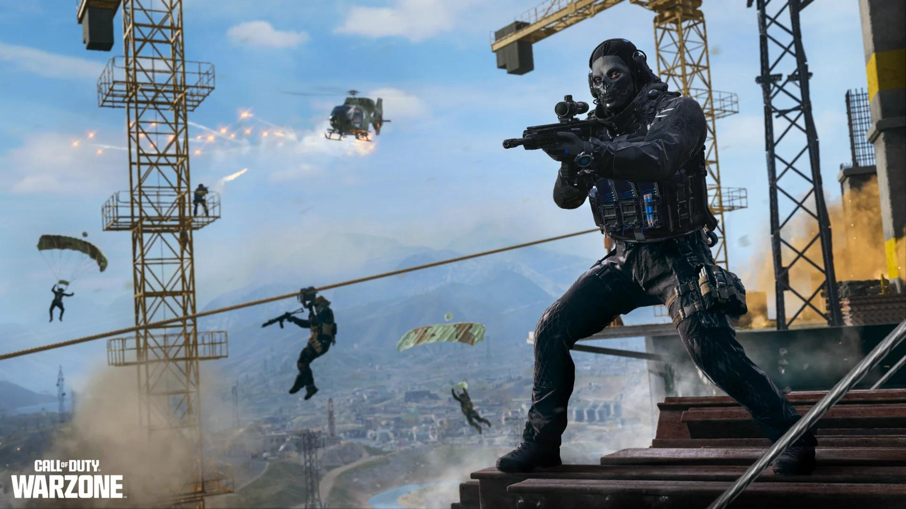

01 / GAMING
Les jeux vidéo occupent une place importante dans mes loisirs. J'aime particulièrement les jeux compétitifs, les jeux de course et les mondes ouverts.
Mes jeux préférés
- Call of Duty
- Ghost of Tsushima
- Grand Theft Auto V et bientôt le VI
- Forza Horizon
- Grand Turismo
- WRC
- Ride
- the Crew
- Assassin's Creed